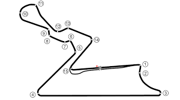
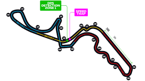
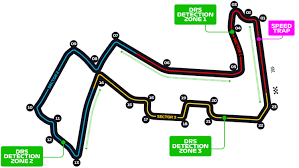
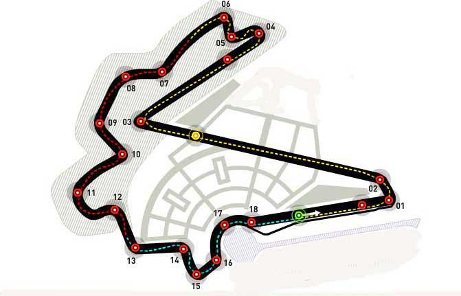

-
<!DOCTYPE html>
<html lang:"pt-br">

<head>
  <meta charset="utf-8">
  <meta name="viewport" content="width=device-width, intial-scale=1.0">
  <title>Circuitos Sprint 3</title>

  <link href="style.css" rel="stylesheet" type="text/css" />
</head>


<body>
  <header>
    <h1>Circuitos</h1>
    <a href="../index.html">
      
    </a>
  </header>
  <a href="../index.html">
    
  </a>


  <div class="linha">
    <div class="circuitos">
      <h2>Interlagos</h2>
      
      <button id="button"> Clique aqui</button>
      <div class="wrapper">
        <div class="popup">
          <div class="content">
            <h2> Interlagos</h2>
            <a> circuito do Brasil da Fórmula 1 é o Autódromo José Carlos Pace, também conhecido como Interlagos. Ele
              está localizado na cidade de São Paulo e é um dos circuitos mais tradicionais do calendário da F1. A pista
              tem um comprimento de 4,309 km e é caracterizada por suas curvas sinuosas e mudanças de elevação. A
              corrida é realizada no final da temporada e muitas vezes é decisiva para a disputa do campeonato mundial
              de pilotos e construtores. A corrida é conhecida por sua atmosfera vibrante e pelos fãs apaixonados que
              lotam as arquibancadas. </a>

          </div>
        </div>
      </div>

    </div>
    <div class="circuitos">
      <h2>Sakhir</h2>
      
      <button id="button2"> Clique aqui</button>
      <div class="wrapper2">
        <div class="popup">
          <div class="content">
            <h2> Sakhir</h2>
            <a>O Circuito Internacional do Bahrain é uma pista de corrida localizada em Sakhir, no Bahrein, e é a sede
              do Grande Prêmio do Bahrein de Fórmula 1. Com uma extensão de 5,4 quilômetros, a pista tem 15 curvas,
              incluindo uma reta principal longa que permite velocidades de até 320 km/h. O circuito foi inaugurado em
              2004 e se tornou a primeira pista do Oriente Médio a sediar uma corrida de Fórmula 1. Além do Grande
              Prêmio do Bahrein, a pista também sedia outras corridas, incluindo a etapa de abertura do Campeonato
              Mundial de Endurance da FIA.</a>

          </div>
        </div>
      </div>

    </div>
    <div class="circuitos">
      <h2>COTA</h2>
      
      <button id="button3"> Clique aqui</button>
      <div class="wrapper3">
        <div class="popup">
          <div class="content">
            <h2> popup 1</h2>
            <a>O Circuito das Américas (COTA) é um dos circuitos de Fórmula 1 mais modernos e tecnologicamente avançados
              do mundo. Localizado em Austin, no Texas, o COTA é um circuito de 5,5 km que apresenta uma mistura de
              curvas de alta velocidade e baixa velocidade, bem como uma longa reta principal. O circuito tem uma
              capacidade de público de mais de 100.000 pessoas e é conhecido por sua atmosfera vibrante e animada. Desde
              sua estreia na Fórmula 1 em 2012, o circuito já sediou uma série de corridas emocionantes e é um favorito
              entre pilotos e fãs. </a>

          </div>
        </div>
      </div>

    </div>
    <div class="circuitos">
      <h2>Greater Noida</h2>
      
      <button id="button4"> Clique aqui</button>
      <div class="wrapper4">
        <div class="popup">
          <div class="content">
            <h2> Circuito Internacional de Buddh</h2>
            <a>A Índia sediou a Fórmula 1 entre 2011 e 2013 no Circuito Internacional de Buddh, localizado em Greater
              Noida, perto de Nova Deli. O circuito possui 5.14 km de extensão e 16 curvas, incluindo uma reta longa que
              oferece oportunidades para ultrapassagens. A pista foi projetada pelo arquiteto alemão Hermann Tilke e é
              conhecida por suas curvas inclinadas e ondulações. O GP da Índia foi bem recebido pelos pilotos e fãs, mas
              a corrida foi retirada do calendário da F1 em 2014, devido a questões financeiras e políticas. Desde
              então, não houve planos para trazer a corrida de volta ao país. </a>

          </div>
        </div>
      </div>

    </div>
  </div>
  <div class="linha">
    <div class="circuitos">
      <h2>Monza</h2>
      
      <button id="button5"> Clique aqui</button>
      <div class="wrapper5">
        <div class="popup">
          <div class="content">
            <h2> Autodromo Nazionale di Monza</h2>
            <a>O circuito da Itália, oficialmente chamado de Autodromo Nazionale di Monza, é um dos mais antigos e
              icônicos circuitos da Fórmula 1. Ele é famoso por suas longas retas e curvas de alta velocidade, e é
              considerado por muitos como um dos circuitos mais rápidos do calendário.
              Localizado na cidade de Monza, na região da Lombardia, o circuito é conhecido por sediar o Grande Prêmio
              da Itália desde 1950, com exceção de algumas temporadas. Com seus 5.793 km de extensão, o circuito possui
              11 curvas e uma das maiores retas da Fórmula 1, onde os carros podem atingir velocidades de até 350 km/h.
              O circuito é conhecido por sua atmosfera vibrante e apaixonada, com fãs apaixonados pelo automobilismo e
              pela Ferrari, a lendária equipe italiana de Fórmula 1. A reta principal do circuito é famosa por ser
              cercada por uma arquibancada de madeira, conhecida como "pista mágica", onde os fãs podem assistir a
              corrida bem de perto. </a>

          </div>
        </div>
      </div>

    </div>
    <div class="circuitos">
      <h2>Suzuka</h2>
      
      <button id="button6"> Clique aqui</button>
      <div class="wrapper6">
        <div class="popup">
          <div class="content">
            <h2> Suzuka International Racing Course</h2>
            <a>O circuito do Japão, também conhecido como Suzuka International Racing Course, é um circuito icônico da
              Fórmula 1 e é considerado um dos melhores e mais desafiadores do calendário. Localizado em Suzuka, no
              Japão, o circuito foi construído em 1962 e recebeu sua primeira corrida de Fórmula 1 em 1987.
              O circuito japonês tem sido palco de algumas das corridas mais emocionantes e importantes da história da
              Fórmula 1, como o lendário duelo entre Ayrton Senna e Alain Prost em 1989, que decidiu o título daquele
              ano, e a memorável corrida de 2005, quando Kimi Raikkonen venceu após largar em 17º lugar. A pista de
              Suzuka continua a ser um dos destinos mais populares da temporada de Fórmula 1.</a>

          </div>
        </div>
      </div>

    </div>
    <div class="circuitos">
      <h2>Singapura</h2>
      
      <button id="button7"> Clique aqui</button>
      <div class="wrapper7">
        <div class="popup">
          <div class="content">
            <h2> Marina Bay Street</h2>
            <a>O Circuito de Marina Bay Street, localizado em Singapura, é um dos circuitos urbanos mais desafiadores do
              calendário da Fórmula 1. Com um percurso de 5,063 km e 23 curvas, é conhecido por sua paisagem noturna
              deslumbrante, com a corrida acontecendo à noite para criar uma atmosfera única.

              Os pilotos precisam ter um alto nível de habilidade para dominar as curvas apertadas e os trechos
              estreitos do circuito, além de enfrentar condições de alta umidade e temperatura, o que torna a corrida
              fisicamente exigente. O Circuito de Marina Bay Street é famoso por proporcionar corridas emocionantes e
              imprevisíveis, com a possibilidade de carros de segurança e várias ultrapassagens. </a>

          </div>
        </div>
      </div>

    </div>
    <div class="circuitos">
      <h2>Yeongam</h2>
      
      <button id="button8"> Clique aqui</button>
      <div class="wrapper8">
        <div class="popup">
          <div class="content">
            <h2> Korean International</h2>
            <a>O circuito da Coreia do Sul, também conhecido como Korean International Circuit, foi construído em
              Yeongam, no sudoeste do país, para sediar a Fórmula 1 pela primeira vez em 2010. O circuito tem 5,615 km
              de extensão, com 18 curvas, incluindo uma longa reta de 1,2 km que oferece boas oportunidades para
              ultrapassagens. A pista tem uma combinação de curvas de alta e baixa velocidade, o que a torna desafiadora
              para os pilotos. A última vez que o circuito sediou um Grande Prêmio foi em 2013, e desde então não foi
              incluído no calendário da Fórmula 1.
            </a>

          </div>
        </div>
      </div>

    </div>
  </div>
  <script src="script.js"></script>
  <footer>
      
    
  </footer>

</body>

</html>